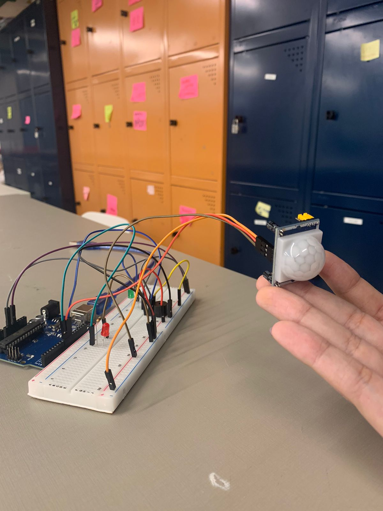

Sobre o Projeto MoveSense
Este projeto consiste em uma campainha inteligente que utiliza um sensor de movimento para detectar a presença de alguém e acionar um som de campainha. O sensor de movimento é conectado ao Arduino, que é responsável por processar os dados do sensor e controlar o funcionamento da campainha.
Imagem do MoveSense
Como funciona?
Quando alguém se aproxima da entrada onde a campainha está instalada, o sensor de movimento detecta o movimento e envia um sinal para o Arduino. O Arduino então ativa um dispositivo sonoro, como um buzzer ou um alto-falante, reproduzindo o som de uma campainha.
Objetivos
Este projeto de campainha com sensor de movimento serve para automatizar o processo de recepção de visitantes em residências ou ambientes comerciais. Ao detectar o movimento de alguém próximo à entrada, a campainha é acionada automaticamente, eliminando a necessidade de intervenção manual. Isso proporciona conveniência aos moradores e visitantes, garantindo que sejam alertados da presença de alguém na entrada. Além disso, pode ser útil para fins de segurança, permitindo que os residentes saibam quando alguém se aproxima da entrada, mesmo quando estão em outra parte da casa ou do escritório. Em resumo, o projeto visa melhorar a experiência de receber visitantes, tornando-a mais eficiente e automatizada.
Benefícios
- Facilita a detecção de visitantes ou entregas na entrada da casa ou escritório
- Oferece uma solução simples e econômica para criar uma campainha inteligente e personalizada
- Pode ser integrado a outros sistemas domésticos inteligentes para automatizar ainda mais o ambiente
Materiais utilizados
Materiais necessários:
- Arduino
- Sensor de movimento PIR
- Buzzer (para o alarme sonoro)
- 2 LED
- Resistor de 300 Ω
- Resistor de 10 kΩ
- 11 Jumpers
- Protoboard
- Fonte de alimentação (cabo USB para o Arduino)
Como foi feita a montagem?
- Conectamos todos os componentes conforme o diagrama do projeto
- Carregamos o código no Arduino usando o software Arduino IDE
- Após o upload do código, o alarme estará pronto para detectar movimento e acionar o buzzer e o LED
Código do Projeto
const int pinoPIR = 9; //PINO DIGITAL UTILIZADO PELO SENSOR DE PRESENÇA
const int pinoLED = 7; //PINO DIGITAL UTILIZADO PELO LED
const int buzzer = 10; //Buzzer
void setup(){
Serial.begin(9600);
pinMode(pinoLED, OUTPUT); //DEFINE O PINO COMO SAÍDA
pinMode(pinoPIR, INPUT); //DEFINE O PINO COMO ENTRADA
}
void loop(){
delay(1500);
if(digitalRead(pinoPIR) == HIGH){ //SE A LEITURA DO PINO FOR IGUAL A HIGH, FAZ
Serial.println(digitalRead(pinoPIR)); //ACENDE O LED
Serial.print("HIGH");
tone(buzzer,700);
}else{ //SENÃO, FAZ
Serial.println(digitalRead(pinoPIR));
digitalWrite(pinoLED, LOW); //APAGA O LED
noTone(buzzer);
}
}